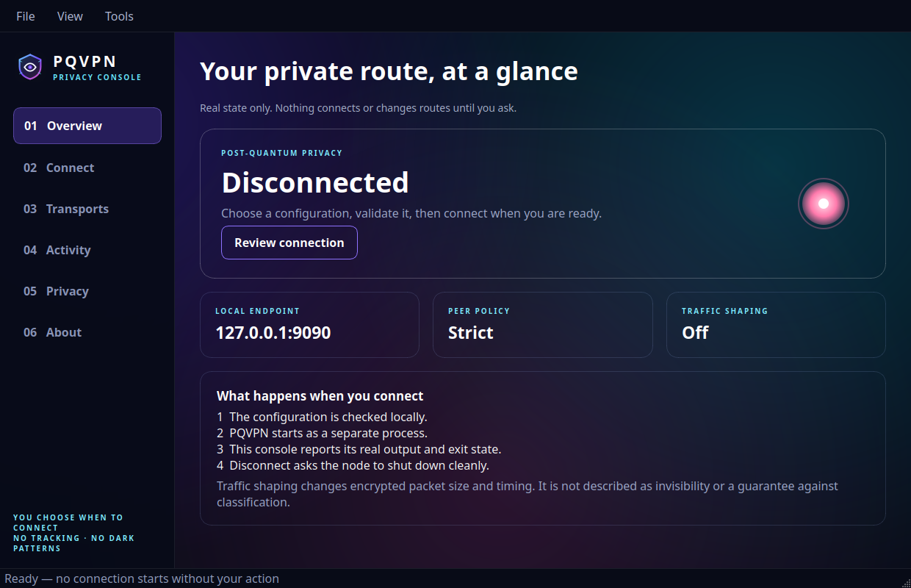

Hybrid post-quantum handshake
X25519 and ML-KEM-1024 establish secrets; Ed25519 and ML-DSA-87 authenticate the same transcript.
Experimental public alpha · C++23
Build a private network between machines you control, with hybrid post-quantum identity, auditable peer discovery and native tools for desktop, terminal and automation.
Detecting your platform · all downloads remain selectable
ℂ → Σg · HYBRID IDENTITY
X25519 + ML-KEM-1024
Built as a system
The GUI, CLI and TUI operate the same configuration and canonical node. No second crypto stack, no simulated status.
X25519 and ML-KEM-1024 establish secrets; Ed25519 and ML-DSA-87 authenticate the same transcript.
Authenticated onion layers move traffic through peers you selected, with replay windows and bounded parsing.
PQTP observes loss, jitter and failure thresholds, preferring UDP and applying hysteresis before lane changes.
Attach isolated engines such as udp2raw. External processes keep their own privileges, lifecycle and updates.
Linux TUN, a macOS Network Extension boundary and the PQVPN Windows NDIS tunnel use target-specific code.
Linux x86_64/ARM64, macOS Intel/Apple Silicon and Windows x86_64 must configure, compile and start before release.
Signal path
Public coordination, explicit consent
This signed-in-code registry lists only operators who deliberately publish a reachable bootstrap peer. Inclusion is discovery, not endorsement, uptime or permission to abuse a node.
Checking the versioned peer list…
Loading declared peers…
Native privacy console
Validate before connecting, inspect the selected transport, operate from the system tray, or reduce motion. The SSH-ready TUI and automation CLI expose the same configuration on every supported OS.

Professional means verifiable
This alpha has no independent audit. Use it for evaluation and controlled networks.
Mainnet entries are opt-in, reviewable and removable through repository history.
Operators define access and egress policy. Privacy does not remove responsibility.
Platform support appears only after its native workflow succeeds.